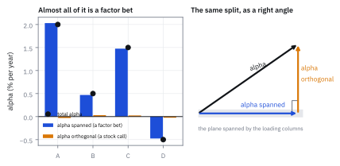
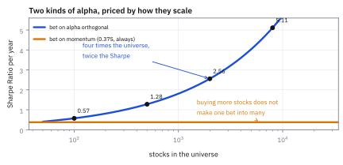
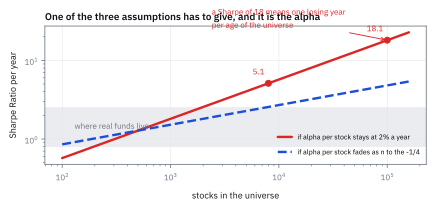
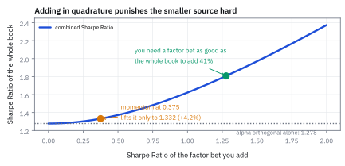

26.2 Alpha Spanned and Alpha Orthogonal
ผลตอบแทนคาดหวังสองชนิด ที่มีค่าไม่เท่ากันอย่างมหาศาล
สัญญาณหนึ่งให้ผลตอบแทนคาดหวังเฉลี่ย 2% ต่อปีต่อหุ้น บนหุ้น 500 ตัวที่มี idiosyncratic volatility 35% ต่อปี อีกสัญญาณบอกว่า momentum จะให้ 3% ต่อปีที่ความผันผวน 8% อันไหน Sharpe Ratio สูงกว่า?
เฉลย: อันแรกได้ 1.278 อันที่สองได้ 0.375 ทั้งที่อันแรกพยากรณ์หุ้นละแค่ 2% ซึ่งฟังดูน้อยกว่ามาก เหตุผลคือ อันแรกเป็นการเดิมพัน 500 ครั้งที่กระจายความเสี่ยงได้ ส่วนอันที่สองเป็นการเดิมพันครั้งเดียว และถ้าขยายจักรวาลเป็น 2,000 ตัว อันแรกจะได้ 2.556 ขณะที่อันที่สองยังได้ 0.375 เท่าเดิม
ศัพท์ที่ใช้ในหัวข้อนี้
- alpha
- ผลตอบแทนคาดหวังส่วนเกินที่ไม่ได้มาจากการรับความเสี่ยงของตลาด ใช้เป็นสิ่งที่นักวิจัยสัญญาณพยายามหา
- alpha spanned
- ส่วนของ alpha ที่เขียนเป็นผลรวมของคอลัมน์ loading ได้ ใช้เรียก alpha ที่แท้จริงแล้วคือการเดิมพันบน factor
- alpha orthogonal
- ส่วนของ alpha ที่ตั้งฉากกับทุกคอลัมน์ของ loading ใช้เรียก alpha ที่ factor อธิบายไม่ได้เลย
- column space
- เซตของ vector ทุกตัวที่เขียนเป็นผลรวมถ่วงน้ำหนักของคอลัมน์ได้ ใช้เป็นที่ที่ alpha spanned อาศัยอยู่
- projection
- การหาจุดในปริภูมิย่อยที่ใกล้จุดที่ให้มาที่สุด ใช้แยก alpha ออกเป็นสองส่วน
- orthogonal complement
- ทิศทางทั้งหมดที่ตั้งฉากกับปริภูมิย่อยหนึ่ง ใช้เป็นที่อยู่ของ alpha orthogonal
- Euclidean norm
- ความยาวของ vector ที่ได้จากรากที่สองของผลรวมกำลังสอง ใช้วัดขนาดรวมของ alpha
- operator norm
- ค่าที่ใหญ่ที่สุดที่ matrix ยืด vector ได้ สำหรับ covariance matrix แบบ diagonal คือค่าที่ใหญ่สุดในแนวทแยง ใช้เป็นขอบบนของความเสี่ยง
- diversification
- การกระจายเงินไปหลายเดิมพันที่ไม่สัมพันธ์กัน ใช้ลดความเสี่ยงโดยไม่ลดผลตอบแทนคาดหวัง
- breadth
- จำนวนเดิมพันอิสระที่ทำได้ในหนึ่งงวด ใช้เป็นตัวคูณของฝีมือในหัวข้อ 30.4
- Sharpe Ratio
- ผลตอบแทนคาดหวังต่อหนึ่งหน่วยความผันผวน ใช้เป็นคะแนนเปรียบเทียบสองกลยุทธ์ในหัวข้อนี้
- smart beta
- คำที่ใช้ขายกองทุนที่เดิมพันบน factor เป็นหลัก ใช้เรียกกลยุทธ์ที่กำไรมาจาก alpha spanned ล้วน ๆ
- factor-mimicking portfolio (FMP)
- พอร์ตที่ผลตอบแทนใกล้เคียง factor หนึ่งตัวมากที่สุด ใช้เป็นเครื่องมือเทรด alpha spanned ในหัวข้อ 30.2
- reductio
- วิธีพิสูจน์ที่สมมติว่าข้อความเป็นจริง แล้วเดินตามไปจนเจอผลที่เป็นไปไม่ได้ ใช้ในขั้นที่ 5 เพื่อหาว่าสมมติฐานข้อไหนต้องผิด
สัญลักษณ์ที่ใช้ในหัวข้อนี้
| สัญลักษณ์ | ความหมาย | หน่วย |
|---|---|---|
| $\boldsymbol\alpha$ | ผลตอบแทนคาดหวังของหุ้นทุกตัว | decimal ต่อปี |
| $\boldsymbol\alpha_\parallel$ | ส่วนที่ factor อธิบายได้ คือ alpha spanned | decimal ต่อปี |
| $\boldsymbol\alpha_\perp$ | ส่วนที่ตั้งฉากกับ factor คือ alpha orthogonal | decimal ต่อปี |
| $\boldsymbol\lambda$ | น้ำหนักที่ทำให้คอลัมน์ของ loading รวมกันเป็น $\boldsymbol\alpha_\parallel$ | decimal ต่อปี |
| $\mathbf B$ | loadings matrix ขนาด $n\times m$ | unitless |
| $\boldsymbol\Omega_\epsilon$ | covariance matrix ของ idiosyncratic return | decimal² |
| $\mu$ | ค่าเฉลี่ยของขนาด alpha orthogonal ต่อหุ้นหนึ่งตัว | decimal ต่อปี |
| $\sigma_\epsilon$ | idiosyncratic volatility ต่อหุ้น | decimal ต่อปี |
| $n,\ m$ | จำนวนหุ้น และจำนวน factor | จำนวน |
| $\|\mathbf x\|_1,\ \|\mathbf x\|$ | ผลรวมของขนาด และความยาวแบบ Euclidean | ตามหน่วยของ x |
ที่มาที่ไป: alpha ที่ไม่เหมือนกัน
นักวิจัยสัญญาณเดินเข้ามาบอกว่า “ผมมี alpha” คำถามแรกที่ควรถามไม่ใช่ว่าใหญ่แค่ไหน แต่คือมันอยู่ทิศไหน
ถ้าทิศของมันบังเอิญเป็นผลรวมของคอลัมน์ใน loadings matrix นั่นแปลว่าสิ่งที่เขาค้นพบคือ “หุ้น momentum สูงจะให้ผลตอบแทนดี” ซึ่งเป็นการทำนาย factor return ไม่ใช่การทำนายหุ้น และการเดิมพันแบบนั้นเป็นการเดิมพันครั้งเดียว ต่อให้กระจายไปกี่ร้อยตัวก็ยังเป็นครั้งเดียว
ถ้าทิศของมันตั้งฉากกับทุกคอลัมน์ นั่นคือของอีกชนิดหนึ่งโดยสิ้นเชิง มันคือการทำนายที่เป็นอิสระต่อกัน 500 ครั้ง และ Sharpe Ratio ของมันโตตามรากที่สองของจำนวนหุ้น หัวข้อนี้จะพิสูจน์ข้อนั้นและหาว่ามันโตได้ถึงไหน
โจทย์: แยก alpha ออกเป็นสองส่วน แล้วตีราคาแต่ละส่วน
โจทย์ให้อะไรมาบ้าง ส่วนแรกใช้ loadings matrix เดียวกับหัวข้อ 26.1 คือหุ้นสี่ตัว A B C D กับสาม factor และให้ alpha ต่อปีมาเป็น A 2.0% B 0.5% C 1.5% D −0.5%
ส่วนที่สองขยายเป็นขนาดจริง หุ้น 500 ตัว ค่าเฉลี่ยของขนาด alpha orthogonal ต่อหุ้นคือ 2.0% ต่อปี และ idiosyncratic volatility ของทุกตัวคือ 35% ต่อปี เทียบกับการเดิมพันบน momentum ที่คาดว่าจะให้ 3.0% ต่อปีที่ความผันผวน 8.0% ต่อปี
ต้องหาห้าอย่าง การแยก alpha ออกเป็นสองส่วน ขนาดของแต่ละส่วน Sharpe Ratio ของการเดิมพันบนส่วนที่ตั้งฉาก Sharpe Ratio ของการเดิมพันบน factor และสิ่งที่เกิดขึ้นเมื่อขยายจักรวาลออกไปเรื่อย ๆ
ขั้นที่ 1 — แยก alpha ด้วยการฉายลงบนคอลัมน์
นี่คือนิยามของการแยก ทุก vector เขียนเป็นส่วนที่อยู่ในปริภูมิของคอลัมน์ บวกส่วนที่ตั้งฉากกับมัน ได้เสมอและได้แบบเดียว ส่วนแรกหาได้ด้วยสูตร least squares ที่เห็นมาแล้วในบทที่ 15
ตรวจเองใน 10 วินาที บวกสองบรรทัดล่างเข้าด้วยกันต้องได้ alpha เดิม 2.0305 − 0.0305 = 2.0 ✓ และ 0.4695 + 0.0305 = 0.5 ✓ อีกข้อคือผลรวมของ $\boldsymbol\alpha_\perp$ ต้องเป็นศูนย์ เพราะคอลัมน์แรกของ loading เป็นหนึ่งทั้งหมด −0.0305 + 0.0305 + 0.0244 − 0.0244 = 0 ✓
ตัวเลข $\boldsymbol\lambda$ อ่านได้ตรง ๆ ว่า alpha ก้อนนี้กำลังพนันอะไร มันพนันว่า market จะให้ 0.89% และ momentum จะให้ 0.98% ต่อปี ส่วน tech แทบไม่พนันเลย นั่นคือคำอธิบายทั้งหมดของ alpha 2.0% ในหุ้น A
ขั้นที่ 2 — ขนาดของสองส่วน และทำไมมันถึงบวกกันแบบกำลังสอง
เพราะสองส่วนตั้งฉากกัน ทฤษฎีบทพีทาโกรัสใช้ได้ตรง ๆ ความยาวกำลังสองของ alpha เต็มเท่ากับผลรวมของความยาวกำลังสองของสองส่วน
ในตัวอย่างนี้ alpha เกือบทั้งหมดเป็นชนิด spanned เพราะหุ้นมีแค่ 4 ตัวและ factor มี 3 ตัว ปริภูมิที่เหลือให้ alpha orthogonal อาศัยจึงมีมิติเดียว
ตัวเลข $n-m$ นี้คือกุญแจ ที่หุ้น 500 ตัวกับ 60 factor มิติที่เหลือคือ 440 มิติ นั่นคือที่ว่างมหาศาลสำหรับ alpha ที่ factor อธิบายไม่ได้ และเป็นเหตุผลที่ผลลัพธ์ในขั้นที่ 4 ถึงทรงพลังในโลกจริงแต่ไม่ทรงพลังในตัวอย่างสี่ตัวนี้
Figure 26.2a — alpha แยกเป็นสองส่วนที่ตั้งฉากกัน

แผงซ้ายคือ alpha ของหุ้นสี่ตัว แยกเป็นแท่งที่ factor อธิบายได้กับแท่งที่เหลือ แผงขวาคือภาพเดียวกันในเชิงเรขาคณิต alpha เป็นลูกศรหนึ่งอัน เงาของมันบนระนาบของ factor คือ alpha spanned และส่วนที่ตั้งฉากขึ้นมาคือ alpha orthogonal
ขั้นที่ 3 — เดิมพันบนส่วนที่ตั้งฉาก ได้อะไร
สร้างพอร์ตที่มีทิศเดียวกับ $\boldsymbol\alpha_\perp$ พอดี แล้วปรับให้ความยาวเป็นหนึ่ง คำนวณผลตอบแทนคาดหวังและ variance ของมัน เนื่องจากพอร์ตตั้งฉากกับทุกคอลัมน์ของ loading มันจึงไม่มี exposure ต่อ factor เลย ความเสี่ยงทั้งหมดจึงเป็น idiosyncratic
บรรทัดที่สองสวยมาก ผลตอบแทนคาดหวังของพอร์ตนี้เท่ากับ ความยาว ของ alpha orthogonal พอดี ไม่ใช่ค่าเฉลี่ยของมัน ความยาวคือสิ่งที่โตตามจำนวนหุ้น ส่วนค่าเฉลี่ยไม่โต นั่นคือทั้งกลไกของเรื่องนี้
บรรทัดที่สามใช้ขอบบนที่หยาบมาก คือเอา idiosyncratic variance ที่ใหญ่ที่สุดในตลาดมาเป็นตัวแทนของทุกตัว ที่ทำแบบนั้นได้เพราะเราต้องการแค่ขอบล่างของ Sharpe Ratio และขอบที่หยาบก็เพียงพอจะพิสูจน์สิ่งที่จะตามมา
ขั้นที่ 4 — ความยาวโตตามรากที่สองของจำนวนหุ้น
ถ้า alpha orthogonal มีขนาดเฉลี่ยต่อหุ้นเท่ากับ $\mu$ ไม่ว่าจักรวาลจะใหญ่แค่ไหน ความยาวของมันโตอย่างไร ใช้อสมการมาตรฐานระหว่างผลรวมของขนาดกับความยาวแบบ Euclidean แล้วแทนค่า
คำตอบคือ 1.278 จากสัญญาณที่พยากรณ์หุ้นละแค่ 2% ต่อปี ซึ่งเป็นตัวเลขที่ฟังดูไม่น่าตื่นเต้นเลยเมื่อพูดถึงหุ้นตัวเดียว นั่นคือสิ่งที่ทำให้ผลนี้น่าทึ่ง
เหตุผลเชิงสัญชาตญาณคือ ผลตอบแทนรวมโตตาม $n$ เพราะเดิมพันทุกตัวได้กำไรเฉลี่ยเท่ากัน แต่ความเสี่ยงรวมโตแค่ตาม $\sqrt n$ เพราะเดิมพันไม่สัมพันธ์กัน ผลหารจึงโตตาม $\sqrt n$
บนโต๊ะจริง นี่คือเหตุผลที่กองทุนขยายจักรวาลหุ้นอยู่ตลอด จาก 500 ตัวไป 2,000 ตัว Sharpe Ratio เพิ่มจาก 1.278 เป็น 2.556 เท่าตัว โดยที่ฝีมือในการพยากรณ์หุ้นแต่ละตัวไม่ต้องดีขึ้นเลย
Figure 26.2b — Sharpe Ratio ของสองชนิด เมื่อจักรวาลใหญ่ขึ้น

แกนนอนคือจำนวนหุ้นในจักรวาล บนสเกล logarithm แกนตั้งคือ Sharpe Ratio ต่อปี เส้นที่ไต่ขึ้นคือการเดิมพันบน alpha orthogonal ซึ่งโตตามรากที่สองของจำนวนหุ้น เส้นแบนคือการเดิมพันบน momentum ซึ่งไม่ขยับเลยเพราะยังเป็นการเดิมพันครั้งเดียวไม่ว่าจะซื้อหุ้นกี่ตัว
แล้วเอาไปใช้ทำอะไรได้จริงบ้าง
คำถามแรกที่ควรถามสัญญาณใหม่ทุกตัวคือ ให้ฉายมันลงบน loadings matrix แล้วดูว่าเหลืออะไรบ้าง ถ้า 95% ของมันเป็น spanned สิ่งที่ค้นพบคือการพนันบน factor ซึ่งอาจยังดี แต่ต้องตีราคาด้วยไม้บรรทัดคนละอัน และต้องแข่งกับกองทุน smart beta ที่คิดค่าธรรมเนียม 20 จุดพื้นฐาน
บนโต๊ะจริง ขั้นตอนนี้คือขั้นตอนมาตรฐานก่อนรับสัญญาณเข้าระบบ และหัวข้อ 30.3 จะแสดงวิธีทำอย่างละเอียด ทั้งการฉาย การประมาณผลตอบแทนของส่วนที่เหลือ และการเทรดมัน
ขั้นที่ 5 — เดินตามผลนี้ไปจนสุด แล้วดูว่าอะไรพัง
สมมติว่าขอบล่างในขั้นที่ 4 ใช้ได้กับทุกขนาดจักรวาล โดย $\mu$ คงที่และ idiosyncratic variance ที่ใหญ่ที่สุดมีเพดาน แล้วปล่อยให้ $n$ โตไปเรื่อย ๆ ดูว่าได้อะไร
Sharpe Ratio 18 ต่อปีแปลว่าขาดทุนรายปีเกิดขึ้นได้ราวหนึ่งครั้งในทุกอายุของเอกภพ ไม่มีกองทุนไหนในประวัติศาสตร์ทำได้ใกล้เคียง ข้อสรุปนี้จึงผิดแน่นอน และเมื่อข้อสรุปผิด สมมติฐานข้อใดข้อหนึ่งต้องผิด
สมมติฐานมีสามข้อ factor model ถูกต้อง idiosyncratic variance มีเพดาน และ $\mu$ คงที่ไม่ว่าจักรวาลจะใหญ่แค่ไหน ข้อที่สองตรวจได้และเป็นจริงในข้อมูลจริง idiosyncratic volatility รายปีของหุ้นสหรัฐฯ แทบไม่เกิน 40% ดังนั้นข้อที่ต้องผิดคือข้อที่สาม
สิ่งที่บอกเราคือ ยิ่งขยายจักรวาล alpha orthogonal เฉลี่ยต่อหุ้นยิ่งเล็กลง ซึ่งสมเหตุสมผลมาก หุ้นตัวที่ 2,000 ในตลาดคือหุ้นที่เล็กและสภาพคล่องต่ำ การพยากรณ์มันไม่ได้ง่ายเท่าหุ้นตัวที่ 50 และค่าใช้จ่ายในการเทรดมันก็สูงกว่ามาก ซึ่งเป็นเรื่องของบทที่ 31
Figure 26.2c — เดินตามขอบล่างไปจนได้ตัวเลขที่เป็นไปไม่ได้

เส้นทึบคือขอบล่างเมื่อ alpha เฉลี่ยต่อหุ้นคงที่ ซึ่งพุ่งเลยเส้นที่กองทุนเก่งที่สุดในโลกทำได้ไปไกล เส้นประคือกรณีที่ alpha ต่อหุ้นหดลงตามหนึ่งส่วนรากที่สี่ของจำนวนหุ้น ซึ่งให้เส้นที่แบนราบและอยู่ในโลกจริง แถบเทาคือช่วงที่กองทุนจริงอยู่
ขั้นที่ 6 — รวมสองชนิดเข้าด้วยกัน
กองทุนจริงมีทั้งสองอย่าง ถ้าสองแหล่งไม่สัมพันธ์กัน Sharpe Ratio รวมได้จากการบวกกำลังสองแล้วถอดราก เหมือนที่ความเสี่ยงบวกกันในหัวข้อ 26.1 แทนตัวเลขของโจทย์
การเพิ่มการเดิมพันบน momentum เข้าไปในกองทุนที่มี alpha orthogonal ดีอยู่แล้ว ช่วยให้ Sharpe Ratio ดีขึ้นแค่ 4.22% ทั้งที่ตัวมันเองมี Sharpe Ratio ตั้ง 0.375 ซึ่งไม่เลว
เหตุผลคือการบวกแบบกำลังสองลงโทษของที่เล็กกว่าอย่างรุนแรง 0.375 เทียบกับ 1.278 คือ 29% แต่พอยกกำลังสองแล้วเหลือ 8.6% ของผลรวม
ข้อสรุปที่ใช้ตัดสินใจได้ ถ้ากองทุนมี alpha orthogonal ที่ดีแล้ว การไปหา factor bet เพิ่มให้ผลตอบแทนน้อยมากเมื่อเทียบกับความยุ่งยากและความเสี่ยงที่กระจายไม่ได้ ควรเอาเวลาไปขยายจักรวาลหรือปรับปรุงสัญญาณเดิมแทน
Figure 26.2d — การบวกแบบกำลังสองลงโทษแหล่งที่เล็กกว่าอย่างหนัก

แกนนอนคือ Sharpe Ratio ของการเดิมพันบน factor ที่เพิ่มเข้าไป แกนตั้งคือ Sharpe Ratio รวม เส้นเริ่มที่ 1.278 ซึ่งคือค่าของ alpha orthogonal เพียงอย่างเดียว ที่ 0.375 ซึ่งคือ momentum ในโจทย์ ค่ารวมขึ้นไปแค่ 1.332 กว่าจะเห็นผลชัดต้องมี factor bet ที่ Sharpe Ratio เกิน 1 ขึ้นไป
กับดัก: รายงาน alpha โดยไม่ฉายก่อน และคิดว่ารากที่สองมาฟรี
กับดักแรกคือรายงานผลการทดสอบย้อนหลังของสัญญาณโดยไม่เคยฉายมันลงบน loadings matrix เลย สัญญาณที่ดูดีจำนวนมากกลายเป็น momentum หรือ low volatility เมื่อฉายแล้ว ซึ่งเป็นของที่ซื้อได้ในราคากองทุนดัชนี การตั้งค่าธรรมเนียมแบบกองทุนเฮดจ์ฟันด์กับของแบบนั้นเป็นปัญหาทั้งทางธุรกิจและทางจริยธรรม
กับดักที่สองคืออ่านผลของขั้นที่ 4 ว่า “ขยายจักรวาลแล้ว Sharpe Ratio ขึ้นฟรี” ขั้นที่ 5 พิสูจน์แล้วว่าไม่จริง สิ่งที่หายไปจากสูตรคือค่าใช้จ่ายในการเทรด สภาพคล่อง และความจริงที่ว่าหุ้นที่เพิ่มเข้ามาพยากรณ์ยากกว่า สูตรนี้เป็นเพดานที่มีประโยชน์ ไม่ใช่คำสัญญา
กับดักที่สามเป็นเรื่องเทคนิคแต่สำคัญ การแยก alpha เป็นสองส่วนขึ้นกับ loadings matrix ที่ใช้ ถ้าเปลี่ยนแบบจำลองความเสี่ยง สัดส่วนที่เป็น spanned จะเปลี่ยนตาม สัญญาณที่ตั้งฉากเต็มร้อยกับแบบจำลองของผู้ให้บริการเจ้าหนึ่ง อาจเป็น spanned ครึ่งหนึ่งในแบบจำลองของอีกเจ้า จึงควรตรวจกับมากกว่าหนึ่งแบบจำลองเสมอ ซึ่งเป็นหนึ่งในเหตุผลที่บทที่ 28 สอนให้สร้าง statistical model ไว้ใช้คู่กัน
ข้อจำกัด: alpha สองชนิดต่างกันอย่างไรในทางปฏิบัติ
| เรื่อง | alpha spanned | alpha orthogonal | ผลที่ตามมาเวลาใช้งาน |
|---|---|---|---|
| Sharpe Ratio เมื่อขยายจักรวาล | ไม่ขยับ | โตตามรากที่สองของจำนวนหุ้น | กองทุนที่พึ่ง alpha orthogonal มีเหตุผลชัดที่จะลงทุนขยายจักรวาล |
| ความเสี่ยงที่ติดมา | factor risk ซึ่งกระจายไม่หาย | idiosyncratic risk ซึ่งกระจายหาย | ต้องคุมด้วยขีดจำกัด exposure ในหัวข้อ 30.5 |
| ราคาในตลาด | ซื้อได้จากกองทุนดัชนีในราคาถูก | ซื้อจากที่อื่นไม่ได้ | ค่าธรรมเนียมที่เรียกได้ต่างกันหลายเท่า |
| ความคงทน | เปิดเผยในงานวิจัยแล้ว คนแห่ทำตาม | เป็นของเฉพาะตัวมากกว่า | alpha spanned เสื่อมเร็วกว่า ซึ่งเป็นเรื่องของหัวข้อ 15.7 |
แถวที่สามคือคำถามทางธุรกิจที่สำคัญที่สุดของกองทุน ถ้ากำไรเกือบทั้งหมดเป็น spanned ลูกค้าจ่ายค่าธรรมเนียมสูงเพื่อซื้อของที่หาได้ถูกกว่ามาก
ตรวจทุกตัวเลขของหัวข้อนี้
import numpy as np
B = np.array([[1, 1.2, 1], [1, -0.4, 1], [1, 0.6, 0], [1, -1.4, 0]], float)
a = np.array([0.020, 0.005, 0.015, -0.005])
# step 1: the projection
lam = np.linalg.lstsq(B, a, rcond=None)[0]
span = B @ lam
orth = a - span
assert np.allclose(lam * 100, [0.8902, 0.9756, -0.0305], atol=5e-5)
assert np.allclose(span * 100, [2.0305, 0.4695, 1.4756, -0.4756], atol=5e-5)
assert np.allclose(orth * 100, [-0.0305, 0.0305, 0.0244, -0.0244], atol=5e-5)
assert np.allclose(B.T @ orth, 0, atol=1e-15) # orthogonal to every column
assert np.allclose(span + orth, a)
assert abs(orth.sum()) < 1e-15 # because column 1 is all ones
# step 2: Pythagoras
na, ns, no = (np.linalg.norm(x) for x in (a, span, orth))
assert abs(na * 100 - 2.5981) < 1e-4
assert abs(ns * 100 - 2.5975) < 1e-4
assert abs(no * 100 - 0.0552) < 1e-4
assert abs(ns ** 2 + no ** 2 - na ** 2) < 1e-18
assert np.linalg.matrix_rank(B) == 3 # so only 4 - 3 = 1 free direction
# step 3: the orthogonal strategy, checked on the small example
se4 = np.array([0.30, 0.34, 0.28, 0.40])
w = orth / no
assert np.allclose(B.T @ w, 0, atol=1e-14) # no factor exposure at all
assert abs(w @ a - no) < 1e-17 # expected return IS the norm
var = w @ np.diag(se4 ** 2) @ w
assert var <= se4.max() ** 2 + 1e-15 # the crude bound holds
assert w @ a / np.sqrt(var) >= no / se4.max() - 1e-12
# step 4: the norm inequality and the headline number
x = np.array([0.02, -0.02] * 250)
assert abs(np.abs(x).sum() - 10.0) < 1e-12
assert np.abs(x).sum() <= np.sqrt(500) * np.linalg.norm(x) + 1e-12
assert abs(np.linalg.norm(x) - np.sqrt(500) * 0.02) < 1e-12
n, mu, sig = 500, 0.020, 0.35
assert abs(np.sqrt(n) * mu - 0.44721) < 1e-5
assert abs(np.sqrt(n) * mu / sig - 1.2778) < 1e-4
# step 5: follow it out to absurdity
for N, sr in ((100, 0.571), (500, 1.278), (2000, 2.556), (8000, 5.111), (100000, 18.07)):
assert abs(np.sqrt(N) * mu / sig - sr) < 5e-3
assert np.sqrt(4 * n) * mu / sig == 2 * (np.sqrt(n) * mu / sig) # 4x the universe, 2x the Sharpe
# step 6: combining the two
sr_perp, sr_par = np.sqrt(n) * mu / sig, 0.030 / 0.080
assert abs(sr_par - 0.375) < 1e-12
tot = np.sqrt(sr_perp ** 2 + sr_par ** 2)
assert abs(tot - 1.3316) < 1e-4
assert abs(tot / sr_perp - 1 - 0.042177) < 1e-5
assert sr_par / sr_perp > 0.29 and sr_par ** 2 / tot ** 2 < 0.09 # 29% of the size, 9% of the totalบล็อกของขั้นที่ 3 ไม่ได้เชื่อพีชคณิต แต่สร้างพอร์ตจาก $\boldsymbol\alpha_\perp$ จริง แล้วยืนยันว่า exposure ต่อทุก factor เป็นศูนย์ ผลตอบแทนคาดหวังเท่ากับความยาวพอดี และขอบบนของ variance ที่ใช้ในการพิสูจน์เป็นจริง
ก่อนไปต่อ
การแยก alpha ในหัวข้อนี้ขึ้นกับคอลัมน์ของ loadings matrix แต่คอลัมน์ชุดเดียวกันเขียนได้หลายแบบ และบางแบบอ่านง่ายกว่าแบบอื่นมาก หัวข้อถัดไปจะแสดงว่าเปลี่ยนมันได้อย่างไรโดยที่คำพยากรณ์ของแบบจำลองไม่เปลี่ยนเลยแม้แต่นิดเดียว
สรุปที่ใช้ได้จริง
- alpha ทุกตัวแยกได้แบบเดียวเป็นสองส่วน ส่วนที่เป็นผลรวมของคอลัมน์ loading กับส่วนที่ตั้งฉากกับทุกคอลัมน์ ส่วนแรกคือการพนันบน factor ส่วนหลังคือการพยากรณ์หุ้นจริง ๆ
- พอร์ตที่มีทิศเดียวกับ alpha orthogonal มีผลตอบแทนคาดหวังเท่ากับ ความยาว ของมันพอดี ไม่ใช่ค่าเฉลี่ย และไม่มี exposure ต่อ factor ใดเลย
- ถ้าขนาดเฉลี่ยต่อหุ้นคงที่ Sharpe Ratio โตตาม $\sqrt n$ ที่หุ้น 500 ตัว alpha หุ้นละ 2% ต่อปีและ idiosyncratic volatility 35% ให้ Sharpe Ratio 1.278 ขยายเป็น 2,000 ตัวได้ 2.556
- เดินตามผลนั้นไปถึงแสนตัวจะได้ 18.07 ซึ่งเป็นไปไม่ได้ ข้อสรุปคือ alpha orthogonal เฉลี่ยต่อหุ้นต้องหดลงเมื่อจักรวาลใหญ่ขึ้น ไม่ใช่คงที่
- การรวมสองแหล่งใช้การบวกกำลังสอง การเพิ่ม factor bet ที่ Sharpe Ratio 0.375 เข้าไปในกองที่มี 1.278 อยู่แล้ว ได้เพิ่มแค่ 4.22% นั่นคือเหตุผลที่ควรทุ่มเวลาไปกับ alpha orthogonal เป็นหลัก